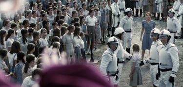

Les jeux de la survie
Hunger Games est une trilogie de romans de science-fiction écrits par Suzanne Collins aux États-Unis. Le premier tome de cette trilogie paraît en 2008.

Hunger Games est une trilogie de romans de science-fiction écrits par Suzanne Collins aux États-Unis. Le premier tome de cette trilogie paraît en 2008.
Carte des Districts
Dans un passé relativement proche, le peuple s’est soulevé contre le Capitole. Celui-ci a vaincu les Districts. Depuis ce jour, il organise des jeux nommés “Hunger Games” en guise de châtiment. Ces jeux consistent à tirer au sort un garçon et une fille par District qui s’affronteront contre les autre tributs jusqu’à la mort dans une arène à l’issu desquels il ne restera qu’un seul survivant qui se verra par la suite devenir riche et célèbre. La participation au tirage au sort ainsi que le visionnage de la retransmission de ces jeux sont obligatoires.
La 74ème édition des Hunger Games est arrivée. Ils débutent avec le jour du tirage au sort, aussi appelé jour de la Moisson. Katniss se porte volontaire pour protéger sa petite soeur. Selon elle, n’aurait aucune chance de survivre dans l’arène. Le coéquipier de Katniss Everdeen se nomme Peeta Mellark. Il s’agit d’un jeune et pauvre boulanger du District.
Katniss se portant volontaire le jour de la Moisson Nous saluons votre courage et votre sacrifice, nous vous souhaitons de joyeux Hunger Games, et puisse le sort vous être favorable”
- Président Snow
Après quelques préparations, tous deux se retrouvent dans l’arène contre les 24 autres joueurs. Au cours du jeu, Katniss réussit à acquérir un arc. Il s’agit de la seule arme pouvant potentiellement la maintenir en vie. Chaque jour, le canon retentit, signe de mort d’un joueur. La survie est une dure épreuve face aux ressources et ravitaillements rares. De plus, les tributs adverses forment de redoutables alliances. Les joueurs les plus redoutés sont ceux des premiers districts. Ils s’entraînent jusqu’à leurs 18 ans puis se portent volontaires le jour de la Moisson.
Après plusieurs jours de survie, de combats et d’alliances, il ne reste plus que Katniss et Peeta dans l’arène. Ils sont déclarés vainqueurs des 74èmes Hunger Games. Les 3ème gagnants du District 12. Lieu où les deux jeunes vainqueurs retournent alors retrouver leurs familles en héros.
« Quand j’étais plus petite, je terrorisais ma mère par mes propos sur le district Douze, sur les gens qui dirigent nos vies depuis le Capitole, la lointaine capitale de ce pays Panem. J’ai fini par comprendre que cela ne nous attirerait que des ennuis. »
Hunger Games : L’Embrasement Suzanne Collins 2009
Hunger Games : La Révolte Suzanne Collins 2010
La Prophétie du gris Suzanne Collins 2003